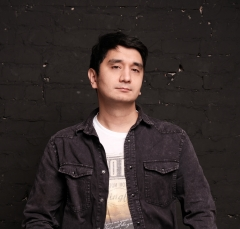

May 2025 — present
MACHINE LEARNING ENGINEER
Ainur Karimov.
Turning data into models. And models into things that work.

01 /
About me
Machine learning engineer with a background in mathematics. I work with computer vision, medical imaging, geospatial data, and robotics — taking models from research and hypothesis testing to production.
02 /
Work experience
From statistics to vision and robotics.
Feb 2025 — Feb 2026 · Jul 2019 — Feb 2022
Avtodoria
Computer Vision / Data Scientist
Segmentation, HD maps, image and geospatial processing. Built a deep learning model from scratch and brought it to production; the solutions were commercialized. Returned in 2025–2026 to work on SLAM and monitoring with Grafana.
Feb 2022 — Dec 2024
Innopolis University
Machine Learning Engineer
Semantic segmentation of medical images. Presented our model at an international oncology forum. The work resulted in patents and a scientific publication.
Sep 2017 — Oct 2018
Maxima
Data Scientist
Research, statistical analysis, and hypothesis testing. Automated Bayesian analytics with statistically robust estimates.
03 /
Tools & interests
Models & data
Engineering
Exploring next
04 /
Education
MIPT
MSc · Phystech School of Aerospace Technology
Kazan Federal University
BMath · Institute of Mathematics and Mechanics, Theory of Functions and Approximations
Big Data Academy MADE
Three semesters covering algorithms, geospatial analysis, graph ML, MLOps, and Bayesian machine learning.
05 /
Research
COMPUTER VISION · HEALTHCARE
Medical image segmentation
A research publication from my work on medical imaging at Innopolis University.
Read the paper ↗︎Languages
Russian · C2 / English · B2 / Tatar · B2 / Turkish · B1 / Spanish · A1
Beyond work
Beyond work: mathematics, science, self-directed learning, and languages. Competed in mathematics contests, including the International Space Olympics and the Lobachevsky Mathematical Competition.
LET’S TALK
Let’s connect.
For conversations about ML, computer vision, or robotics — drop me a line.